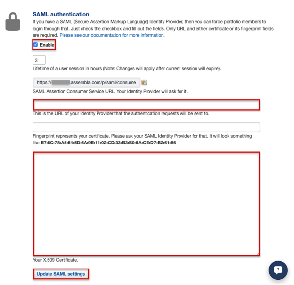
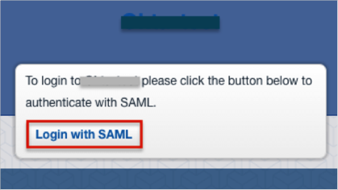

Login to Assembla as an Administrator.
Navigate to the portfolio’s Admin tab (https://[yourSubDomain].assembla.com/p/admin)
Enter the following information (see screen shot at end of step for reference):
SAML Assertion Consumer Service URL: Copy and paste the following:
Sign in to the Okta Admin app to generate this value.
X.509 Certificate: Copy and paste the following:
Sign into the Okta Admin Dashboard to generate this variable.
Click Update SAML Settings.

Done!
Notes:
IdP-initiated flows, SP-initiated flows and Just In Time (JIT) provisioning are all supported.
For SP-initiated flows:
Open your Assembla login URL: https://[yourSubDomain].assembla.com/p/home
Click the Login with SAML button.
